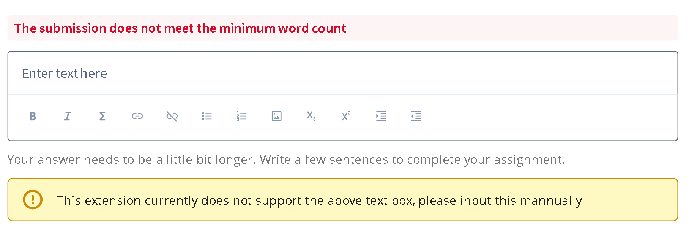

-
🎬
Skip watching videos, reading, and discussions
- - Go to the course page you need to complete.
- - Click "Skip Videos & Readings".
-
- In some modules, to unlock the quiz or assignment for that
module, you may need to skip the discussion as well.
-
Note:
Sometimes, even though the
skip is successful, Coursera may have an error where it
does not update the completion status right now
. In that case, watch any video manually to complete it, then
reload the page. 😥
-
👨🎓
Automated quiz completion (Experimental)
-
- Make sure that the Gemini API key you have inputed is
correct.
- - Change the Picker to "Gemini".
- - Go to the quiz page which you need to complete.
- - Click "Start".
-
Note: the Gemini might give you
incorrect answer, dont overtrust it. Double check your answer
to make sure it is correct. 😥
-
📑
Automated assignment submission (Experimental)
- - Go to the assignment page you need to complete.
- - Click "Auto submit".
-
- After submission, click "Disable AI Grading" if you don't
want AI to grade it.
-
Note: Sometimes, text input
fields (like the one in the image below) are
not automatically filled in. In that case, fill them in manually. 😥

-
✅
Automated assignment grading
- - Go to the peer grading assignment page.
- - Click "Auto grade".
- - Wait and wait... 😥
-
🔗
Get the peer review assignment link
- - Go to the assignment page where you need the link.
- - Click "Get URL".
- - Click the copy button and send it.
-
If you have any feedback or need support, please submit it
here, or message
me
if you're shy. 😥